After ten years of cards, how do you introduce users to a new casual invitation format?
Company Paperless Post
My role Strategy Design Lead
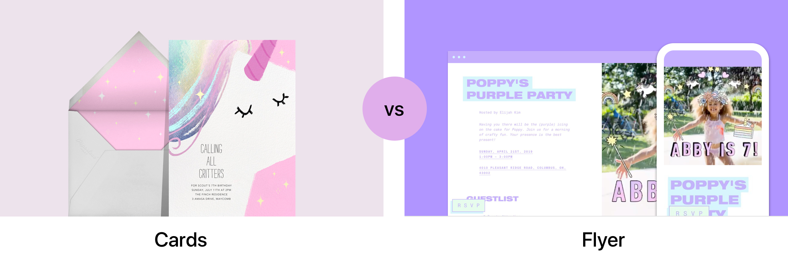
Overview
For its first decade, Paperless Post employed the traditional metaphor of a paper card and envelope. But even digital stationery seemed too formal for some events. Paperless Post needed a modern invitation format that was lighter in tone and easier to edit on a phone.
Enter Flyer
Flyer is a new invitation concept with design templates based on Vibes. A Vibe is a collection (or 'kit') of backgrounds, stickers, and text treatments that look good together and help create a mood for your party. Instead of a card, you create a sharable artifact (a Flyer) that you can post to social networks or email. It's fun, easy, and definitively more casual.
Vibe Instagram campaign produced by the in-house Brand team. Creative Direction: Kelly Na.
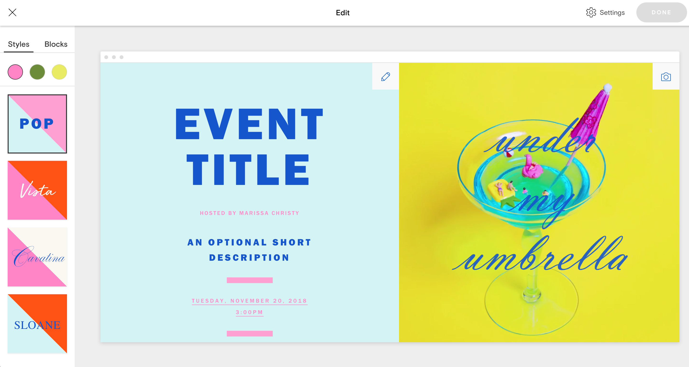
Editing your Flyer on Desktop.
My challenge: discovery
Once the leadership team developed the Vibes, they looked to me for guidance on how should we introduce this new concept to our existing users. For the cards product, we had hundreds of event categories, from "Milestone Birthday" to "Game Day." As a result, we had tens of thousands of designs. We wanted to create a new browsing model based on customization and expression with Vibes. It doesn't matter if it's a dinner or birthday party. The mood is more important. But how do we explain/show a Vibe?
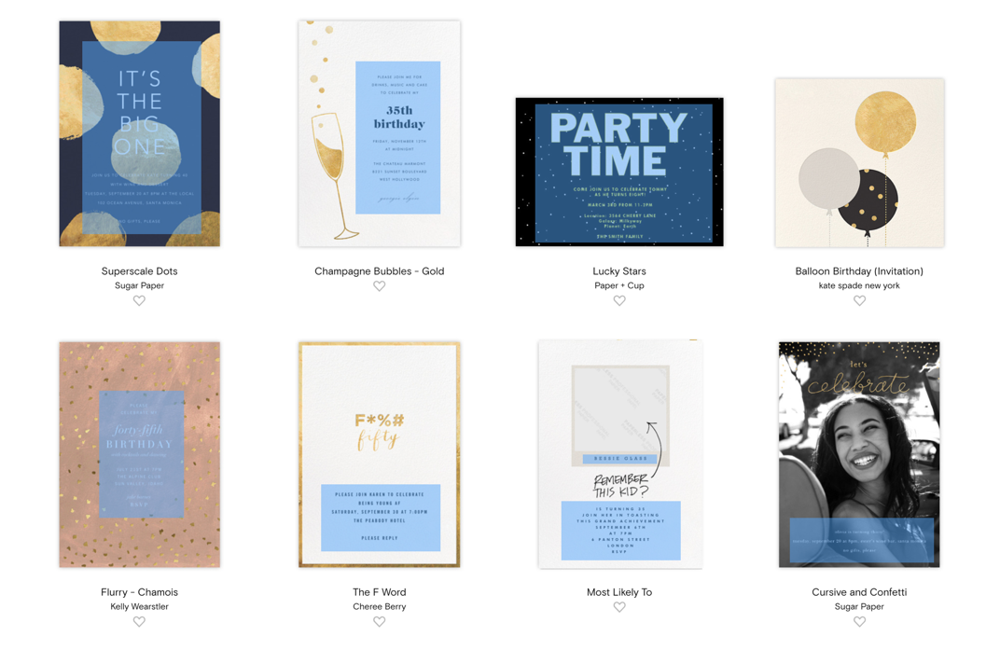
What can be edited on a card.
The explorations
The need for inspiration templates
First of all, we identified the need for examples created with the Vibe as inspritation. I selected three as the minimum number, so our browse was based on that constraint: six Vibes (soon to be twenty) and three examples.
How should we browse the different example templates? A fundamental design decision was whether or not to organize through Vibes or present the examples themselves independent of their respective Vibes. I eventually reasoned that the Vibes were both what we are actually selling and a unique brand value proposition. The challenge was presenting that concept to users.
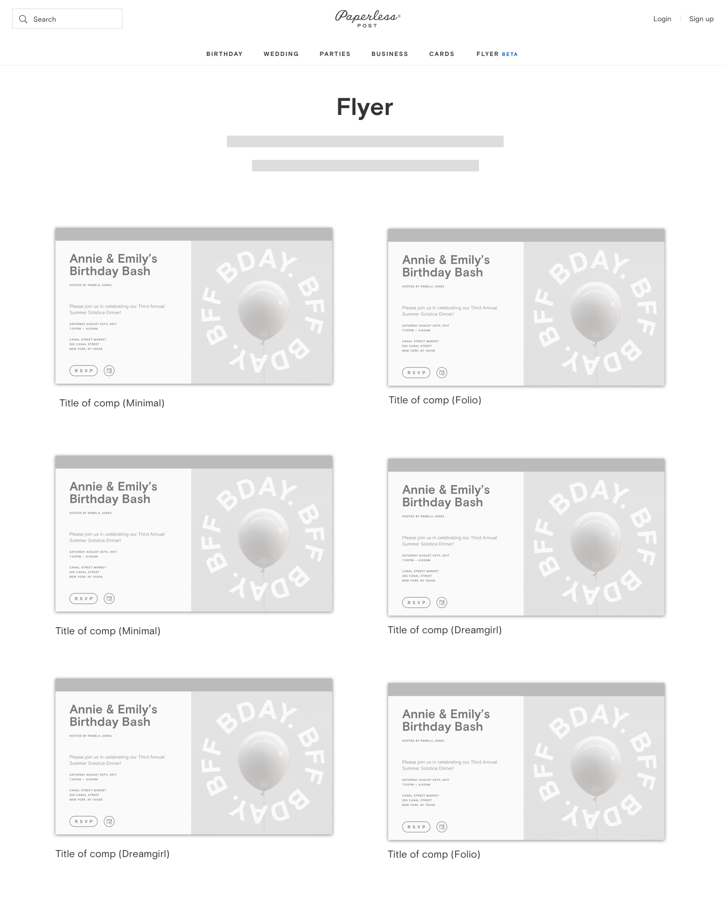
Solution A: The traditional grid
The first idea I considered was an obvious one: a grid view of all example templates. The pro of this option is that it's a familiar design pattern. The con is it doesn't highlight the reality of what you're choosing or highlight customization. It eventually would also require a lot more scrolling through potentially irrelevant content as we add more Vibes (which could lead to browse fatigue).
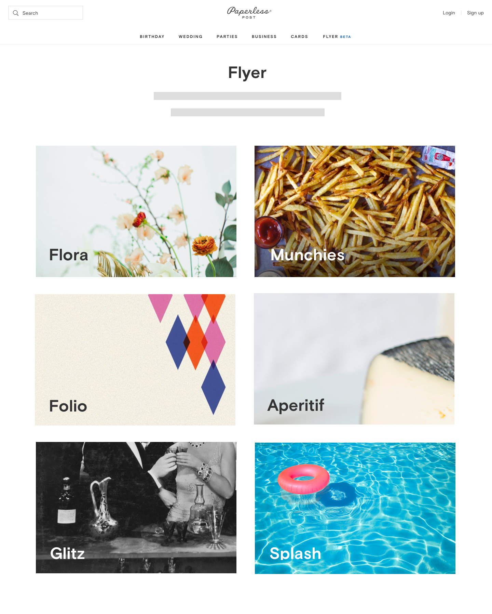
Solution B: Vibe tile
If we didn't want a mixed grid, I then considered a "Vibe tile" browse. The pro of this solution is it's very scalable. We could have hundreds of Vibes with this pattern. Unfortunately, it's not super easy to distill the essence of a Vibe into a single tile. It's also not a frame of reference for people; seeing the event details (the left side of the Flyer) and examples (like Solution A) helps ground what they are looking at.
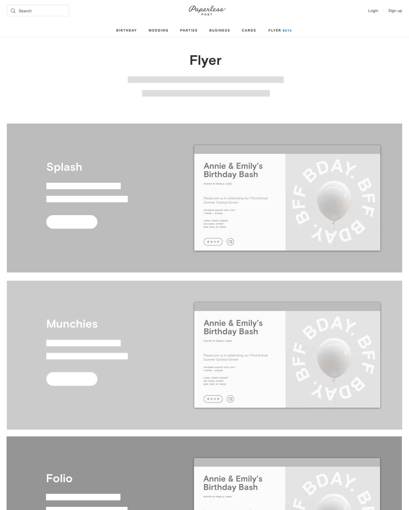
Solution C: Designs organized by Vibe
The third direction I ended up taking was a hybrid approach wherein you could still view the examples but they were organized by Vibe. I went through several iterations on this layout before landing on a full-width row, which worked for our initial launch of six Vibes.
The final design
The browse experience
Below is the Vibe browse experience. To highlight the customizability, I developed a simple prototype which showed how the left and right side would advance automatically. (Again, we were concerned our users might be unimpressed with the initial small offering. We really needed to drive home the element of play.) To help people understand Vibes as kits or branded packages, I created the concept of a Vibe description and color palette to help users differentiate between them.
What's in a Vibe? The Vibe detail page
To highlight the contents of the Vibe (the color options, backgrounds, gifs, and text effects) to curious users, we created a Vibe detail page for each Vibe. Here it is in action.
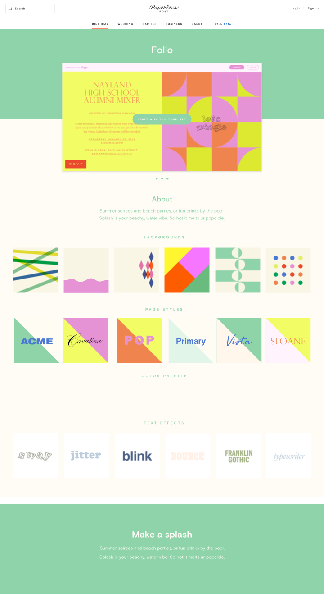
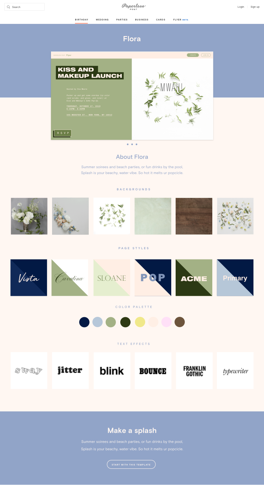
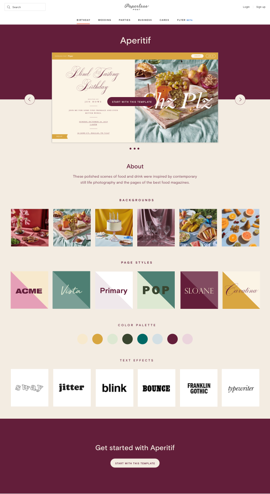
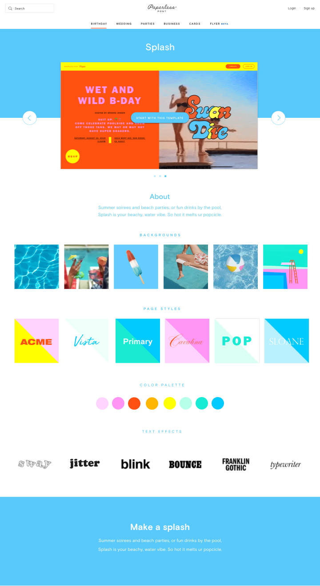
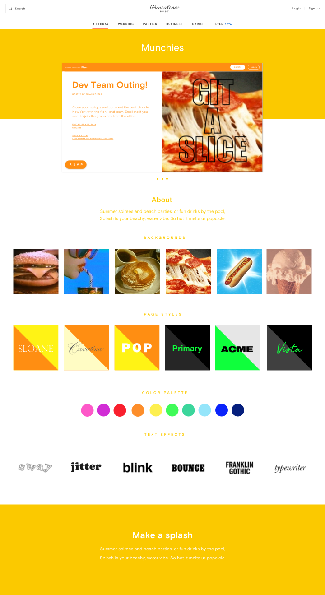
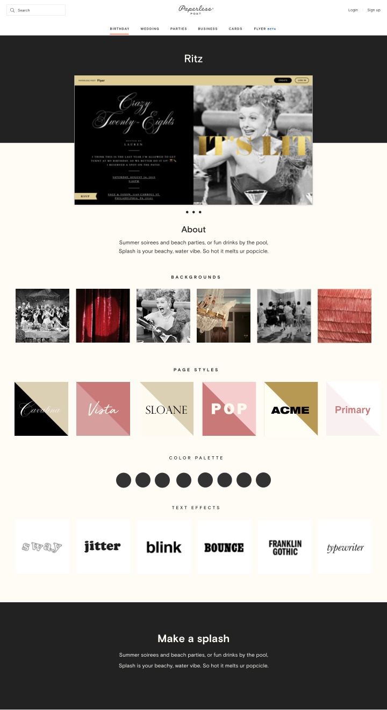
Final VDP Layouts Here are the actual Vibe detail pages for the first six Vibes.
Lessons learned
There is no conclusion yet. Since the launch we've learned a lot, and the product has evolved. We eventually decided to lean more into our examples and allow users to edit them directly. We've noticed that users are over-indexing on the first design in a Vibe, so we have decided to un-nest them to highlight more of the content (we're as of this writing running an experiment). We are continuing to iterate on the best way to sell users on this new and exciting platform.